Podcasts
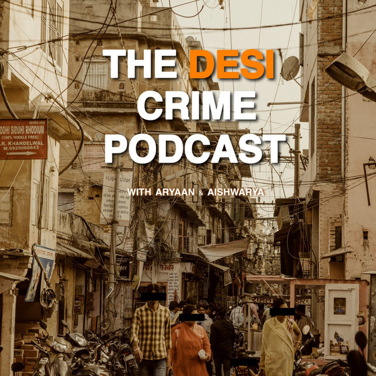
The Desi Crime Podcast
Show • NonFiction Narrative
Aryaan Mishra & Aishwarya Singh
True Crime ▪ Pop Culture ▪ Society
Desi Killers, Desi Kidnappers, Desi Criminals - find them here. We are your one stop shop
for all things Desi, and all things Crazy. Desi crimes are gory, complicated, corrupt and
hardly documented. We’ll take you on a bumpy, jaw dropping rides of Crime around South Asia.
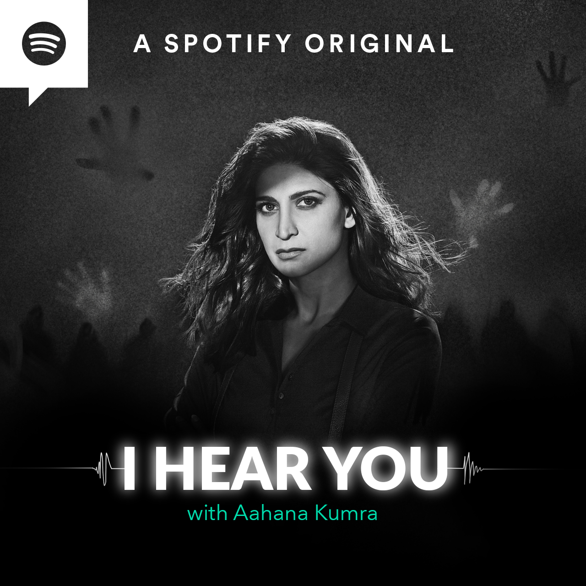
I Hear You
Show • Scripted Fiction
Spotify Studios
Drama ▪ Crime ▪ Thriller ▪
Mystery
There’s a new detective in town. She says she hears voices. But whose voices are these?
After a near-fatal car crash, Priyamvada Parmar's life changes - she discovers that she is
clairaudient and can hear voices from beyond the grave. But is this a boon or a curse? Tune
in to find out as Priyamvada and Viraj tackle cases that threaten the very balance of life
and death.
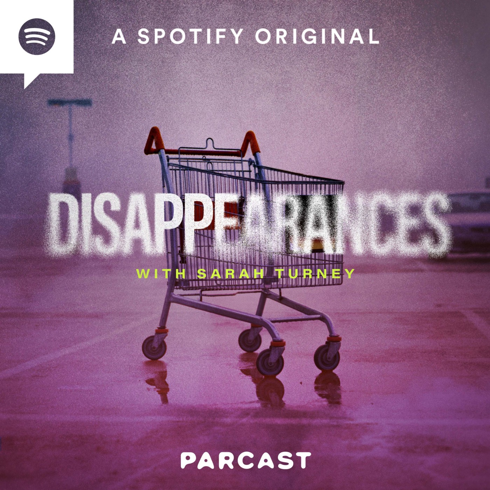
Dissapperances
Show • Non-Fiction Narrative
Parcast Network
True Crime ▪ Mystery ▪ History ▪
Culture
After years of searching for answers, Sarah Turney used social media to help bring justice
to her sister Alissa’s nearly two decades-long disappearance. Now she’s teaming up with
Parcast to explore the many reasons people disappear and the impact their absences can have
on those left behind. Disappearances is a Spotify Original from Parcast.
Simple Ken
Show • Conversational
Kenny Sebstian
Self-Help ▪ Pop Culture ▪ Comedy
Simple Ken is hosted by Kenny Sebastian, A stand up comedian known for his observational
humour and quirky stage presence.A simple podcast about tackling the weekly conflicts of a
comedian. A strictly "no advice"
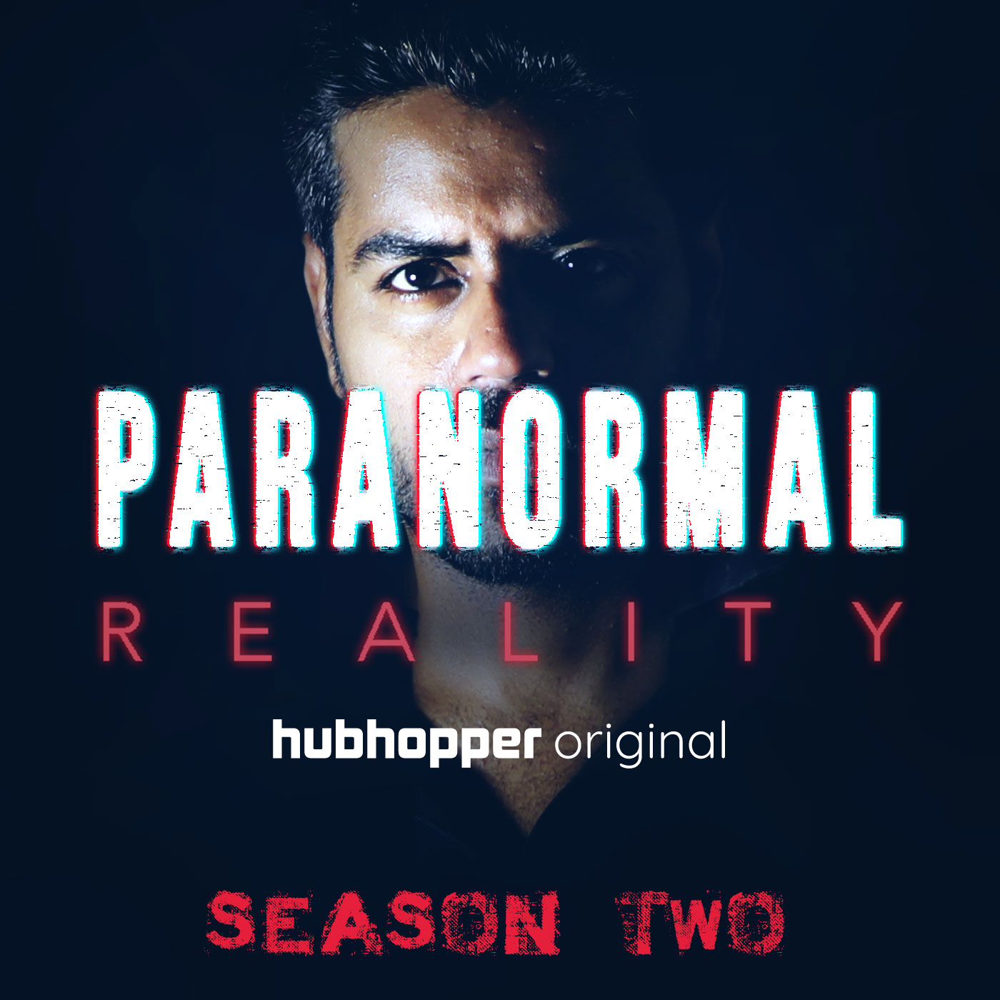
Paranormal Reality
Show • NonFiction Conversational
Jay Alani
Supernatural ▪ Mystery ▪ Society ▪ Culture
Jay Alani, a paranormal investigator, talks about his experiences and voyages while
exploring the world of the paranormal.
Around us, there are countless stories of supernatural. Amidst all
these claims of existence of the paranormal, we have created one more parallel
world in which the supernatural entities lie according to our belief, perception and how our
minds want them to exist.
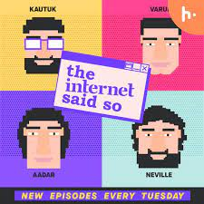
The Internet Said So
Show • Conversational
Varun Thakur
Pop Culture ▪ Comedy
TISS is a weekly podcast where Aadar, Neville, Kautuk and Varun discuss random, fun, stupid,
pointless, weird, shocking "facts" they find on the internet. So come learn with them... or
something like that.
Medical Murders
Show • Non-Fiction Narrative
Parcast
True Crime ▪ Society
In the Parcast Original, Medical Murders, you’ll discover a disturbing diagnosis… that not every doctor wants to extend your life. Every Wednesday, meet the worst the medical community has to offer—men and women who took an oath to save lives, but instead, used their expertise to develop more sinister specialties.
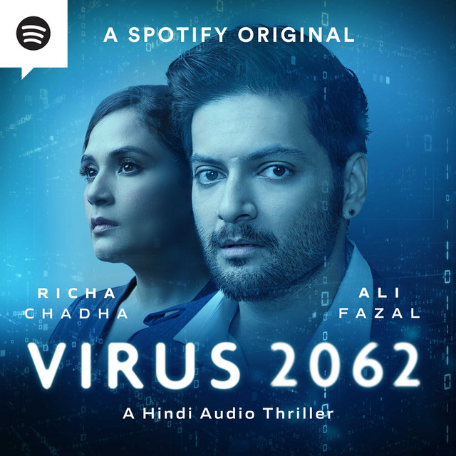
Virus 2062
Show • Scripted Fiction
Spotify Studios
Drama ▪ Crime ▪ Thriller ▪
Mystery
Saal 2022. Psychiatrist Dr. Gayatri Rajput ka saamna hota hai ek 'hatke' patient se...Case no 63, jiska maanna hai ki woh Bhavishya se aaya hai. Saal 2062 se, Duniya ko ek Virus se bachane ke liye. Ek Time traveler. Ek kahani jo Bhavishya aur Bhoot ke beech jhoolti rehti hai, ek kahani jiske dono kirdaro ke haathon mein humare future ki chaabhi hai.
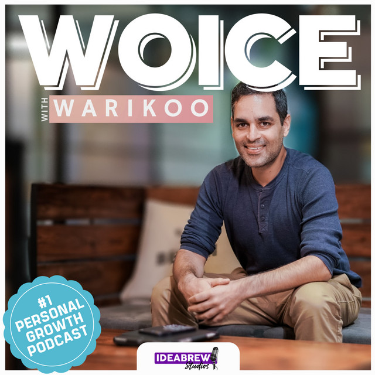
Woice with Warikoo
Show • Conversational
Ankur Warikoo
Business ▪ Career ▪ Motivational ▪
Self-Help
Woice is the official podcast of Ankur Warikoo, where he talks about entrepreneurship, startups, careers and personal growth. Warikoo has been creating video content for the past 4 years across all social media platforms and has a following of 1.7Mn people. Through Woice, he brings his decade long experience as an entrepreneur and as an active student of life, risk and failure.
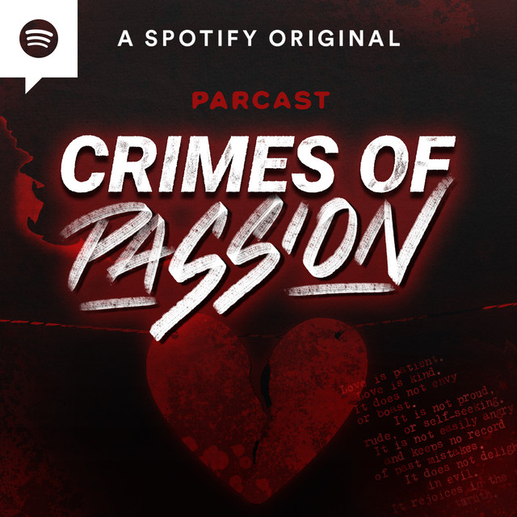
Crimes of Passion
Show • Non-Fiction Narrative
Parcast
True Crime ▪ Romance ▪ Thriller
Every Wednesday, we tell a love story that turns into a crime story. Our subjects might start as lovers, friends, or family, but by the end, there's a criminal and a victim. Along the way, we analyze the relationship dynamics and psychology that lead to betrayal, theft, and even murder.
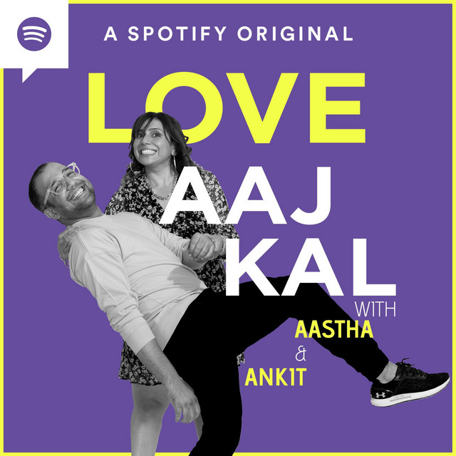
Love Aaj Kal
Show • Conversational
Spotify Studios
Relationships ▪ Romance ▪ Culture ▪
Lifestyle
Aastha and Ankit try and decipher all things dating, hookups and relationship in Love Aaj Kal. They talk about love and all the angst, agony and joy it brings. Just two friends talking about their experiences and hoping you relate.
Humans Of Cinema
Show • Conversational Narrative
Harshit Bansal
Cinema ▪ Media ▪ Pop-Culture ▪
Society
A show where we talk about films and try to engage in meaningful conversations about cinema and its impact on our lives.
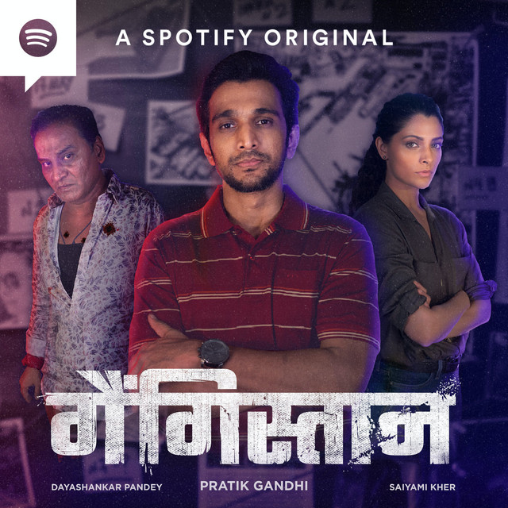
Gangistaan
Show • Scripted Fiction
Spotify Studios
Drama ▪ Crime ▪ Thriller ▪
History ▪ Mystery
Gangistan, ek romanchak aur sachhi kahaani hai, Mumbai ke underworld ki. Mumbai ki. Mumbai ke logo ki. Aashu Patel, ek bebaak journalist, Inspector Shivani, ek jabaaz encounter specialist aur Pappu Takla, ek sanki underworld ka gunda, ek jung lad rahe hai -- pen, bullet aur sachhai ko apne weapons bana kar.
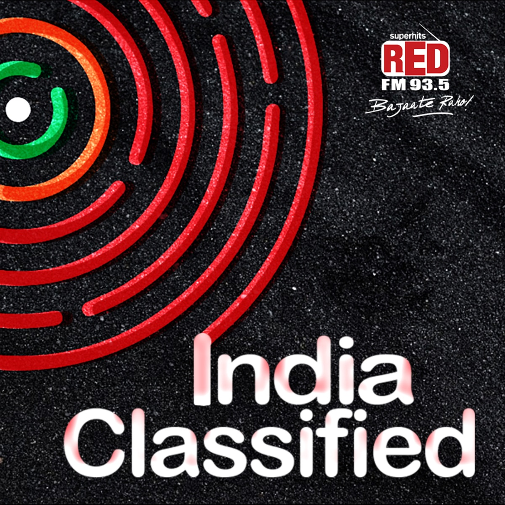
India Classified
Show • Storytelling
RedFM
Mystery ▪ Culture ▪ Society ▪ History
A show about the secrets of India and the truth surrounding the myths. The show explores 'Not everything is what it seems to be' and keeps a scientific intellect while doing so. Find out more about the hidden truth about customs, rituals, scientific theories, the architecture of ancient temples, and much more.

Maha Bharat
Show • Conversational
Spotify
Culture ▪ Society ▪ Knowledge ▪ History
Maha Bharat with Dhruv Rathee - a podcast that delves deep into how things in India actually work. How do you file a police case? What is a republic? What does the RBI do and why should you care? All this and more in this Spotify Original Podcast produced by ATS Studios.